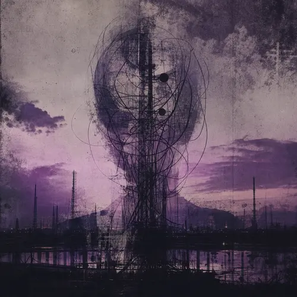
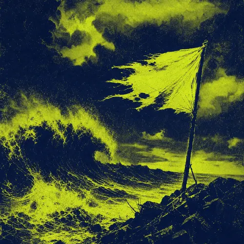
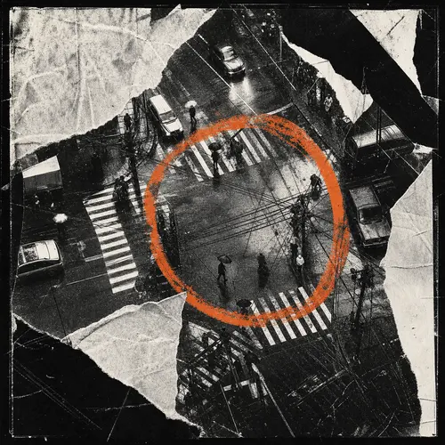
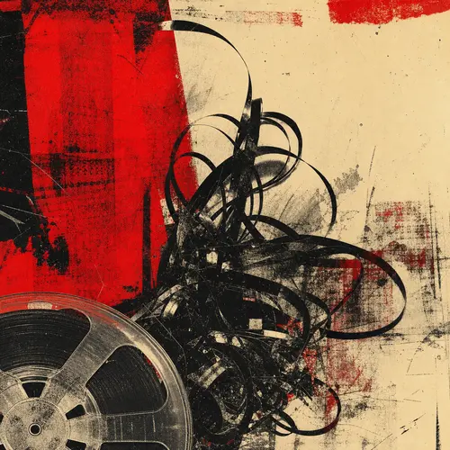
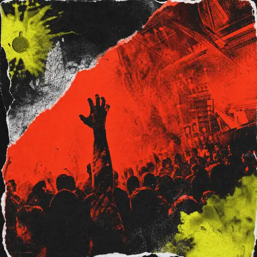

01 / 20Surabaya Hardcore
Anak Anarki
Band Anak Anarki dari Surabaya, aktif sejak 1998.
DIREKTORI / 02ARSIP ARTIS
Nama bisa berganti, formasi bisa berubah. Jejak mereka tetap punya tempat.
20 ARTIS DITEMUKAN / ARSIP TERVERIFIKASI

01 / 20Surabaya Hardcore
Band Anak Anarki dari Surabaya, aktif sejak 1998.
 02 / 20
02 / 20Banyuwangi Metal
Band Api Senja dari Banyuwangi, aktif sejak 2014.

03 / 20Kediri Eksperimental
Band Bentara dari Kediri, aktif sejak 2010.
04 / 20Surabaya Noise
Band Duri Peradaban dari Surabaya, aktif sejak 2003.
05 / 20Gresik Grindcore
Band Gelap Amplop dari Gresik, aktif sejak 2011.

06 / 20Blitar Punk
Band Gerilya Tani dari Blitar, aktif sejak 2006.
07 / 20Madiun Eksperimental
Band Hantu Kota dari Madiun, aktif sejak 2008.
 08 / 20
08 / 20Surabaya Punk
Band Jeruji dari Surabaya, aktif sejak 2001.

09 / 20Malang Noise
Band Jeruji dari Malang, aktif sejak 2003.

10 / 20Jember Indie / DIY
Band Kersakale dari Jember, aktif sejak 2005.
11 / 20Mojokerto Indie / DIY
Band Luka Rapat dari Mojokerto, aktif sejak 2013.
12 / 20Luar Jawa Timur Noise
Band Marjinal dari Luar Jawa Timur, aktif sejak 2002.
Surabaya Grindcore
Band Nekrofonik dari Surabaya, aktif sejak 2007.
14 / 20Malang Sludge
Band Orkestra Jalanan dari Malang, aktif sejak 2017.
15 / 20Jember Hardcore
Band Panggung Kosong dari Jember, aktif sejak 2015.
16 / 20Surabaya Belum dikategorikan
Band underground dari Tegal
17 / 20Sidoarjo Sludge
Band Ritme Baja dari Sidoarjo, aktif sejak 2009.
 18 / 20
18 / 20Malang Sludge
Band Sanggabuana dari Malang, aktif sejak 2004.
19 / 20Surabaya Metal
Band Suara Pinggir dari Surabaya, aktif sejak 2012.
 20 / 20
20 / 20Surabaya Metal
Band Total Ruin dari Surabaya, aktif sejak 1999.